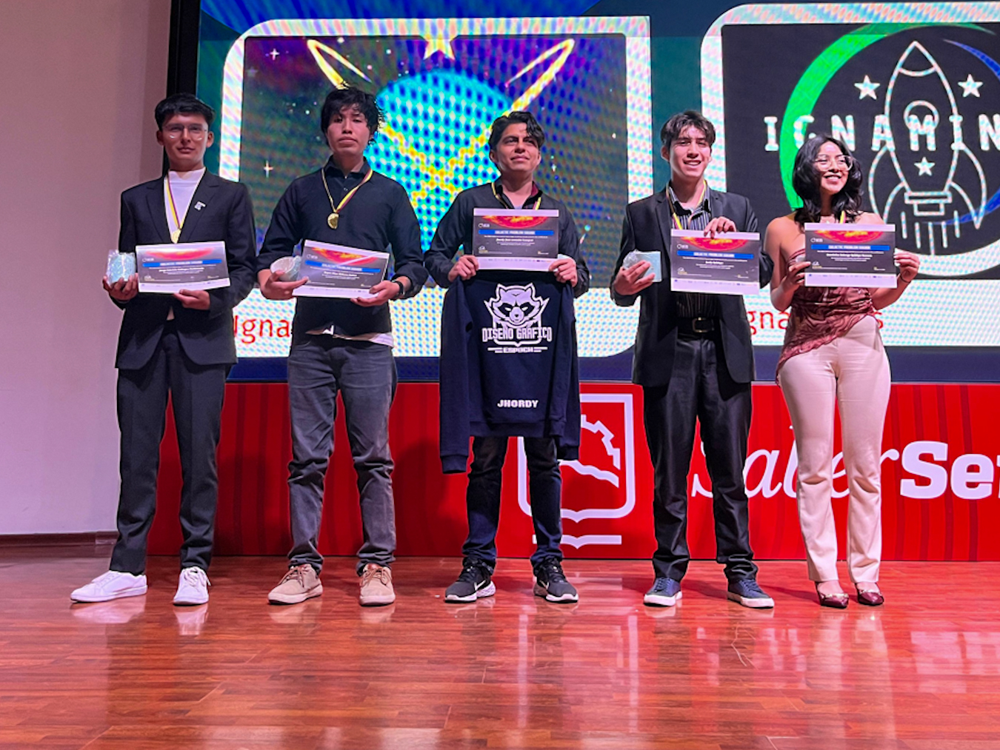

Jorge Gallegos
Theoretical & Computational Astrophysics
I study relativistic fluids, compact objects, and gravitational systems through analytical modeling and high-performance computation. My work focuses on bridging mathematical physics with astrophysical observables.
Aspiring PhD researcher in theoretical astrophysics.